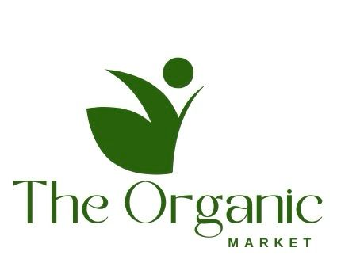

Industry Analysis section of business plan:
The organic & spice industry in The Gambia is thriving, with a market size estimated to be worth millions of dalasis each year. The demand for organic products and spices in the region has been steadily increasing due to a growing interest in traditional and the health benefits associated with using natural herbs and spices. With a population that values flavorful, organic and aromatic delights, the organic and spice industry continues to experience significant growth.
Market analysts project a promising future for the Organic & Spice industry in The Gambia, with an expected market growth of at least 5% annually over the next few years. This anticipated growth is driven by factors such as an expanding middle class, increased disposable income, and a growing awareness of the benefits of using locally sourced Organic Tea’s and spices. As more consumers seek high-quality, organic, and sustainably sourced products, there is a growing opportunity for businesses like THE ORGANIC MARKET to capitalize on the market potential.
The trends in the Organic and spice industry, such as the rising popularity of exotic seasonings, unique flavor combinations, and ready-to-use spice blends, are favorable for THE ORGANIC MARKET as it looks to establish itself as a key player in the Gambian market. With a focus on supplying premium quality, locally made Tea’s and Organic spices, THE ORGANIC MARKET is well-positioned to meet the demands of discerning consumers who are looking for authentic and flavorful ingredients. By staying ahead of industry trends and maintaining a commitment to quality, THE ORGANIC MARKET can seize the opportunities presented by the growing trend of Organic Tea’s and spice in The Gambian market.
Welcome to The Organic Market 